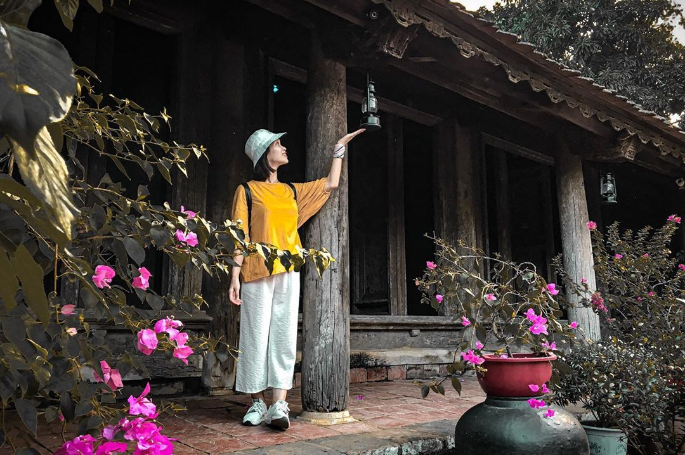
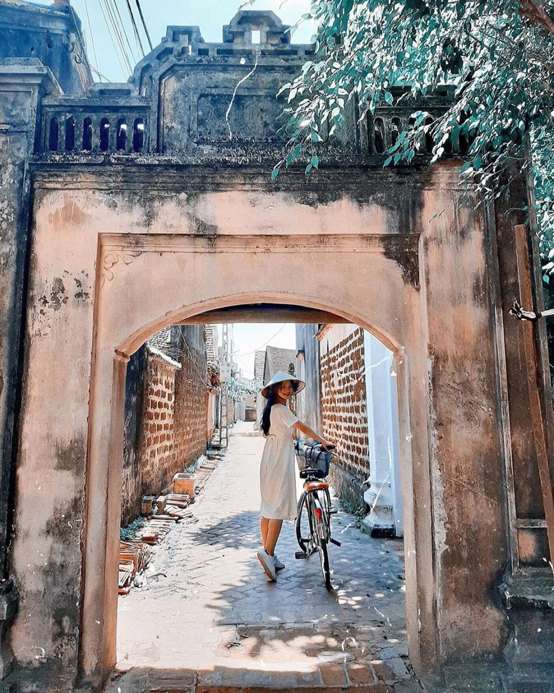

Làng cổ Đường Lâm - địa điểm tham quan thú vị trong lòng Hà Nội
Bạn đang tìm một điểm tham quan thú vị ở Hà Nội cho những ngày cuối tuần, lễ Tết... Cattour đã tìm được một địa điểm nằm ngay trong Hà Nội để khám phá và tham quan để giới thiệu với các bạn rồi đây - đó là làng cổ Đường Lâm. Hãy đọc ngay bài viết này để tìm hiểu xem điểm du lịch này có gì thú vị nhé!
I. Giới thiệu về làng cổ Đường Lâm
Làng cổ Đường Lâm là một làng cổ lâu đời mang rất nhiều nét văn hóa đặc sắc. Cho tới ngày nay, ngôi làng vẫn giữ được những đặc trưng cơ bản của một ngôi làng xưa với đình làng, cây đa, bến nước, chùa miếu… Có thể nói, giá trị nghệ thuật kiến trúc của những ngôi nhà cổ có niên đại 200 – 300 năm ở nơi đây đã khiến cho Đường Lâm đã trở thành một điểm nhấn du lịch của Hà Nội. Vậy thì làng cổ Đường Lâm ở đâu nhỉ? Hãy cùng theo chân Cattour để khám phá ngôi làng được ví là “Cổ trấn bị lãng quên” này nhé!
II. Du lịch làng cổ Đường Lâm
1. Làng cổ Đường Lâm ở đâu?
Làng cổ Đường Lâm nằm cách 44 km về phía tây của trung tâm thành phố Hà Nội, thuộc thị xã Sơn Tây, Hà Nội. Tuy thường được gọi là làng cổ nhưng thực ra Đường Lâm từ xưa gồm 9 làng thuộc tổng Cam Giá Thịnh huyện Phúc Thọ trấn Sơn Tây, trong đó 5 làng Mông Phụ, Đông Sàng, Cam Thịnh, Đoài Giáp và Cam Lâm liền kề nhau. Các làng này gắn kết với nhau thành một thể thống nhất với phong tục, tập quán và tín ngưỡng hàng ngàn năm nay không hề thay đổi. Nơi đây còn được gọi là đất hai vua do là nơi sinh ra Phùng Hưng và Ngô Quyền.
2. Di chuyển đến làng cổ Đường Lâm
Để đến được làng cổ Đường Lâm thì các bạn có thể đi bằng phương tiện cá nhân của mình (xe máy, ô tô…) hoặc là bằng phương tiện công cộng vừa rẻ vừa thuận tiện là xe bus.
Hướng dẫn đi làng cổ Đường Lâm bằng xe bus
Các bạn có thể đi xe bus đến Đường Lâm bằng các tuyến xe sau:
Sau khi đến được bến xe Sơn Tây thì các bạn có thể bắt xe ôm hoặc taxi đi vào làng cổ Đường Lâm.
Hướng dẫn đi làng cổ Đường Lâm bằng xe máy
Nếu các bạn di chuyển bằng xe máy thì có thể chạy thẳng theo tuyến QL32 khoảng 40 km là đến làng cổ Đường Lâm (chú ý khi di chuyển đến gần thị xã Sơn Tây có một ngã rẽ nhớ bật xin nhan vì có các chú luôn trực sẵn tại điểm đó nếu các bạn quên thì “toang” luôn đấy nhé!!!). Sau khoảng hơn 1 tiếng di chuyển thì các bạn sẽ tới được điểm đến này.
3. Giá vé tham quan làng cổ Đường Lâm
Nếu đi xe máy, thì các bạn cần gửi xe trước khi vào tham quan làng. Giá vé gửi xe hiện nay là 10.000 VNĐ/ xe.
Để vào trong làng tham quan thì bạn phải mua vé tham quan có giá là 20.000 VNĐ/ người.
Để đi tham quan làng cổ Đường Lâm thì các bạn có thể đi bộ hoặc thuê xe đạp để đi cho đỡ mệt. Giá thuê xe đạp là khoảng 30.000 - 50.000 VNĐ/ giờ hoặc 80.000 - 100.000 VNĐ/ ngày. Mình khuyên các bạn là nên tham quan bằng xe đạp để tránh bị mỏi chân khi đi bộ và di chuyển được vào sâu trong làng, tham quan được nhiều các địa điểm khác nhau hơn.
4. Các điểm tham quan ở làng cổ Đường Lâm
a. Cổng làng Mông Phụ
Ngay khi vừa đặt chân đến khu vực làng cổ Đường Lâm, xuất hiện trước mắt bạn sẽ là cổng làng Mông Phụ. Cổng làng được xây dựng vào năm 1833 với kiến trúc vòm và lớp đá ong tổ bên cạnh cây đa hơn 300 năm tuổi tạo nên một cảnh quan thực sự thanh bình và cổ kính.
Làng cổ Đường Lâm còn được mọi người gọi là làng đá ong bởi vì đi tới đâu các bạn cũng có thể thấy được những ngôi nhà được xây dựng bằng loại đá này. Các ngôi nhà trong làng thì có 4 kiểu kiến trúc đặc trưng của thời Nguyễn đó là kiến trúc đình làng, kiến trúc nhà quan, kiến trúc nhà thương gia và kiến trúc nhà dân.
b. Đình làng Mông Phụ
Sau khi qua cổng làng, đầu tiên chúng ta cùng tới với kiến trúc đình làng ở đây nào. Ở Việt Nam các bạn đi đến đâu bất kỳ làng xã nào thì cũng có thể sẽ thấy được Đình Làng. Đây là nơi thờ thành hoàng và cũng là nơi sinh hoạt văn hóa chung của người dân và truyền thống đấy còn được kéo dài đến tận bây giờ. Vậy đình làng Mông Phụ ở làng cổ Đường Lâm thì có gì đặc biệt nhỉ?
Đình Mông Phụ được xây dựng năm 1684 (niên hiệu Vĩnh Tộ đời vua Lê Hy Tông) - là ngôi đình đặc trưng cho đình Việt truyền thống. Sân đình thấp hơn mặt bằng xung quanh nên khi trời mưa, nước chảy vào sân rồi thoát ra theo hai cống ở bên tạo thành hình tượng hai râu rồng. Ngôi đình rộng 1800m2, mang đậm nét kiến trúc Việt – Mường, mô phỏng kiến trúc của nhà sàn với sàn gỗ cách đất. Phía bên trong đình có treo rất nhiều hoành phi câu đối nổi bật. Tại đây các bạn sẽ được cụ Phan Văn Tích kể lại rằng những tác phẩm điêu khắc độc đáo, tinh vi trong đình là của cụ Mục Hùng – một người thợ cả tài hoa, có bộ óc sáng tạo và có đôi bàn tay vàng, ông đã có công trực tiếp vẽ mẫu và hướng dẫn nhóm thợ mộc làng Mía xây dựng ngôi Đình này. Có thể nói, đình Mông Phụ chính là tinh hoa của kiến trúc Việt, tạo nên một ngôi Đình không giống với bất kỳ ngôi Đình ở nơi nào khác.
Bên cạnh đình làng thì kiến trúc của nhà quan và thương gia cũng khá là khác nhau trong việc sắp xếp và bố trí xung quanh cũng như kiến trúc tại hai ngôi nhà cổ này làm cho khách thăm quan dễ nhận biết. Xung quanh nhà thương gia sẽ được bố trí rất nhiều chum lớn còn xung quanh nhà quan sẽ không có và kiến trúc nhà quan sẽ cao hơn nhà thương gia và được chạm khắc các đường nét tinh xảo hơn.
Ở Đường Lâm có rất nhiều ngôi nhà cổ, trong đó thì nhà cổ ông Hùng và nhà cổ ông Thể là hai trong những ngôi nhà cổ nhất, được du khách ghé thăm nhiều hơn cả.
c. Nhà cổ ông Hùng
Khi tới làng cổ Đường Lâm, bạn không thể không tới ghé thăm nhà ông Hùng - ngôi nhà lâu đời nhất làng Mông Phụ. Ngôi nhà này đã được xây dựng từ năm 1649, cho tới nay đã gần 400 năm với 12 đời sinh sống ở đây. Ngay khi tới cổng, bạn sẽ được nhìn thấy chiếc cổng cổ được xây bằng đất đá, bã chấu và bùn được trộn lại cùng nhau để tạo thành chất kết dính những viên đá lại.
Ngôi nhà được kết cấu theo kiểu 5 gian 2 dĩ, 3 gian giữa là nơi để thờ cúng tổ tiên bên cạnh bài trí là bộ trường kỷ dùng để tiếp khách, 2 gian bên cạnh dùng làm phòng để ngủ, hệ thống cửa cánh phố ở chính giữa ngôi nhà. Phía bên ngoài sân là những vườn cây, khóm hoa, chum rượu đặc trưng tạo nên một khung cảnh rất yên bình. Cho tới nay, ngôi nhà vẫn được bảo tồn hầu như nguyên vẹn những nét tinh hoa của nghệ thuật kiến trúc Việt.
d. Nhà cổ ông Thể
Ngay sau khi đã ghé thăm và tìm hiểu nhà cổ ông Hùng xong thì bạn có thể di chuyển tham quan nhà cổ ông Thể - một ngôi nhà cũng đã có tuổi đời từ rất lâu rồi. Ngôi nhà này tọa lạc tại xóm Vui, thông Mông Phụ.
Nhà cổ ông Thể gồm 7 gian được gắn kết theo lối cổ truyền. Cả căn nhà được xây dựng hoàn toàn dùng mộng chứ không dùng bất cứ một chiếc đinh sắt nào cả.

Ngôi nhà nay đã trải qua 14 đời sinh sống ở đây và đặc biệt nổi tiếng với nghề làm tương. Ngay khi bước chân vào sân nhà, đã có một mùi tương rất thơm phảng phất, cùng với đó là những chum tương được xếp san sát nhau ở sân. Ở gian nhà ngang phía xa là những dụng cụ để xay ngô cùng với những khóm ngô được treo lên thanh ngang hệt như ngôi nhà trên vùng núi Bắc Bộ vậy.
Khi đến đây, bạn sẽ không thể cưỡng lại được mùi vị đặc trưng của loại tương gạo này và mua một vài chai về để thưởng thức. Ngoài ra cũng có rất nhiều chum đựng rượu truyền thống và những loại rượu hạ thổ đã rất lâu đời rồi. Có lẽ, đây sẽ là căn nhà mà bạn cảm thấy thích thú nhất khi tới ngôi làng này.
Ngoài các ngôi nhà cổ thì các bạn còn có thể các giếng cổ xung quanh làng, đền thờ Phùng Hưng, lăng và đền thờ Ngô Quyền...
e. Các quán nước ven đường
Đi quanh làng cổ, bạn sẽ nhìn thấy rất nhiều những quán nước bên những sạp gỗ nhỏ, trông rất yên bình. Đã đi một hồi lâu và hơi đói, các bạn hãy rẽ vào một quán nhỏ ven đường để thưởng thức chè lam và nước vối - 2 loại món ăn và đồ uống được người địa phương ở nơi đây yêu thích.
5. Đặc sản ở làng cổ Đường Lâm
Tới Đường Lâm, đâu đâu bạn cũng có thể bắt gặp những nhà làm chè lam. Ở đây, chè Lam được bán khắp mọi nơi, là món đặc sản dân giã mà khi tới bất kì đâu bạn cũng có thể thưởng thức. Người dân làng cổ đã làm ra khá nhiều loại chè lam như chè lam gấc, chè lam lá dứa hay chè lam thường. Loại nào cũng ngon, có vị đặc trưng riêng, ai tới đây cũng sẽ mang một ít hương vị độc đáo này về làm quà.
Ngoài ra còn có các loại kẹo lạc, kẹo vừng, bánh gai hay bánh tẻ nổi tiếng. Mùi vị rất thơm và đặc trưng.
Và nhắc tới Đường Lâm, chúng ta không thể không nhắc tới Tương gạo. Tương luôn là món ăn phổ biến của mọi người, mọi nhà ở xứ Đoài. Tương dùng chấm đậu sống, đậu rán, kho cá, chấm rau muống, rau lang, kho thịt. Đặc biệt, nước tương được kho với cá cùng với một số gia vị khác như nước hàng, vài lát riềng, vài miếng thịt ba chỉ trong chiếc nồi đất nung làm cho cá rất nhừ, hết mùi tanh. Thật sự những món đặc sản nơi đây đã làm nên nét rất riêng cho Làng cổ này.
Xuân đã tới, Đường Lâm lại đang khoác lên mình những chiếc áo sắc màu, chim hót líu lo, vẻ yên tĩnh trầm mặc của những ngôi chùa. Giữa cuộc sống xô bồ tấp nập này, vẫn có những nơi như “làng” để mọi người tìm về, để tìm hiểu những giá trị xưa cũ, truyền thống bao đời nay.
6. Một số lưu ý khi tham quan làng cổ Đường Lâm
Tham quan Đường Lâm thích hợp nhất là đi bộ hoặc đi xe đạp vì bạn có thể đi vào từng ngõ ngách của làng mà không phá vỡ sự tĩnh lặng, yên bình của những ngôi nhà cổ nơi đây. Ngoài ra, bạn không nên đi xe máy vì khi đi xe máy đến mỗi điểm tham quan bạn sẽ phải gửi xe khá là lách cách và tốn nhiều tiền gửi xe. Ở một số điểm sẽ chả có người ghi số giữ xe đâu nhưng đến khi các bạn đi ra sẽ có người chạy ra thu tiền.

Ở một số điểm tham quan có người của ban quản lý di tích (đeo thẻ) sẽ giới thiệu về địa điểm đó cho các bạn, việc đưa tiền tips không bắt buộc nhưng những ông lão đó khá nhiệt tình giải thích cho các bạn nên chúng ta cũng nên đáp lại sự nhiệt tình của họ.
Khi vào tham quan các nhà cổ, các bạn nhớ chào những người trong gia đình, xin phép một cách lịch sự, họ sẽ rất nhiệt tình đón tiếp các bạn. Nếu muốn mua gì làm quà cho người ở nhà thì các bạn có thể mua ngay ở những gia đình này thay vì ngoài chợ.
Về vấn đề ăn uống, nơi ở: Nếu các bạn muốn sử dụng các dịch vụ như đặt ăn trưa, homestay mà chưa liên hệ trước thì nên tìm địa điểm liên hệ trước rồi hãy đi chơi vì thường những gia đình này khi các bạn đặt mới bắt đầu làm cơm.
Trên đây là một số thông tin về làng cổ Đường Lâm - một địa điểm du lịch thú vị ngay trong Hà Nội. Nếu các bạn chưa biết đi đâu vào dịp cuối tuần hay lễ Tết sắp tới thì sao lại không chọn Làng cổ Đường Lâm nhỉ???!!!
Chúc các bạn có một chuyến du lịch vui vẻ và ý nghĩa!!!